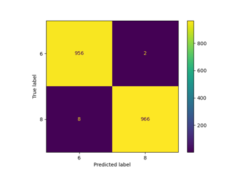
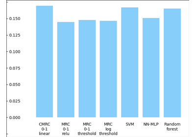
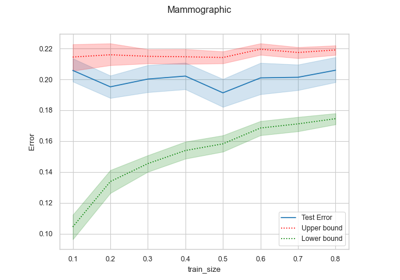

Further applications
This gallery contains examples that illustrate further applications of MRCpy library and its features.


MRCs with Deep Neural Networks: Part II
MRCs with Deep Neural Networks: Part II

Hyperparameter Tuning: Upper Bound vs Cross-Validation
Hyperparameter Tuning: Upper Bound vs Cross-Validation

Example: Comparison to other methods
Example: Comparison to other methods

Example: Use of Upper and Lower bound as error estimation
Example: Use of Upper and Lower bound as error estimation

Example: Predicting COVID-19 patients outcome using MRCs
Example: Predicting COVID-19 patients outcome using MRCs